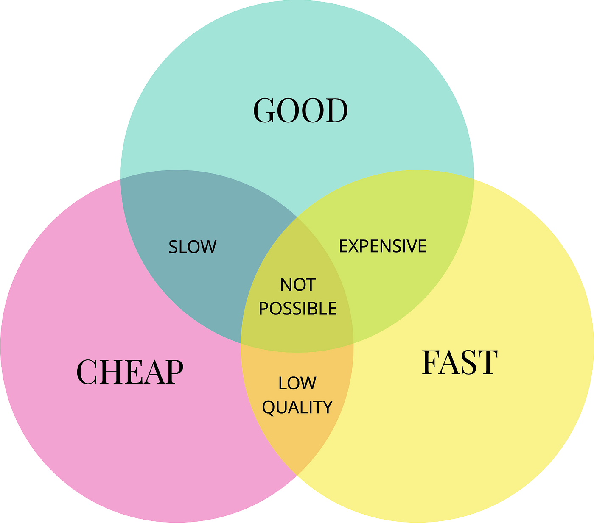

Manufacturing companies are all about churning out as much product as possible as fast as possible for as cheap as possible. Obviously some of these goals are at odds with each other, leading to the infamous triangle that factory managers refuse to believe in:

It's all about finding a balance. But sometimes the balance exists at the expense of the quality of the product, unbeknownst to the factory, leading to a few potential scenarios:
Having a near-miss and mini-heart attack at what could have happened
Having to throw out product. This is essentially wasted time and effort towards making the material. The further it is in its life cycle, the costlier the event.
Having a customer return. This is both wasted time and effort and a massive blow to the trust the customer has in the company. If it's bad enough, the customer may choose someone else.
Gradations exist between those three, although the message is clear: don't make low-quality products!
But sometimes shit happens and we have to throw away a gagillion widgets. What happens then?
Root Cause Analysis
Root cause analysis (RCA) is split up into four distinct root causes (RC), not all of which are applicable to every event and some of which there are multiple of each. First, start with a problem statement, then work down to the individual RCs of:
Non-conformance technical root cause (NCTRC): What was wrong that caused the problem to happen? Fixing this will prevent the specific problem from happening again.
Non-conformance systemic root cause (NCSRC): Why was the problem "allowed" to happen? Fixing this will prevent future problems from happening again.
Non-detection technical root cause (NDTRC): Why wasn't the problem detected immediately? Fixing this will allow improved detection for next time.
Non-conformance systemic root cause (NDSRC): Why was the problem "allowed" to not be detected? Fixing this will ensure future problems are detected.
In sum, the technical root causes are why the problem happened and the systemic root causes are what allowed the problem to happen. Once all of the root causes are identified, actions can be taken to fix each.
For example, here's the RCA for when semiconductor chips are thrown away because they had too many particles on them:
NCTRC: The machine's part had reached the end of its life (EOL) and was no longer functioning properly
Action: Replace the part
NCSRC: The specific part did not have a replacement schedule
Action: Define a replacement schedule such that the part doesn't reach EOL
NDTRC: There is no way to detect the part reaching EOL
Action: Set up a monitoring system to detect when it reaches or is close to reaching EOL
NDSRC: N/A
RCA is a wonderful system in that it allows mistakes to be learned from and gaps fixed, shoring up the dam separating (potential) horrible problems and a smooth, problem-free life. It forces one to consider everything, to go down each path and ask why this or that happened, how they let it happen, and what they have to do to make sure it never happens again.
This is why I now propose it being used in someone's everyday life to address things when they have quality(-of-life) events. When something goes wrong, don't just accept it or move on—learn from it! Understand it! Ask questions about it! Fix it!
Here are a few examples to show how helpful RCA can be across multiple domains of life.
Celia
Derek
Erik
Problem: Andrew missed his flight, costing him $1000s and a missed business opportunity.
Andrew missed his flight for a variety of reasons (the ">" represent the "why?"s drilling down to root cause; actions are in sub-bullets):
Traffic was way worse than normal > there was an accident
The security checkpoint line was longer than normal > more people were flying than normal at this time > it was Friday afternoon
The rideshare took longer to find a driver and arrive than normal > it was Friday afternoon
Andrew lost track of time and called the rideshare too late > he was focusing on work
In the end, this issue can traced down to Andrew arriving at the airport too late. If he had gotten there early enough, the bad traffic and long lines wouldn't have mattered.
The actions Andrew should take from this are:
Schedule a rideshare in advance, preferably at the time of flight booking. If that's too early, set a reminder at the time of booking to do so as soon as the window opens up.
Establish a personal rule to arrive at the airport at least two hours in advance of the flight departure time.
Problem: Celia didn't get promoted at work.
Celia didn't get promoted at work for a variety of reasons: